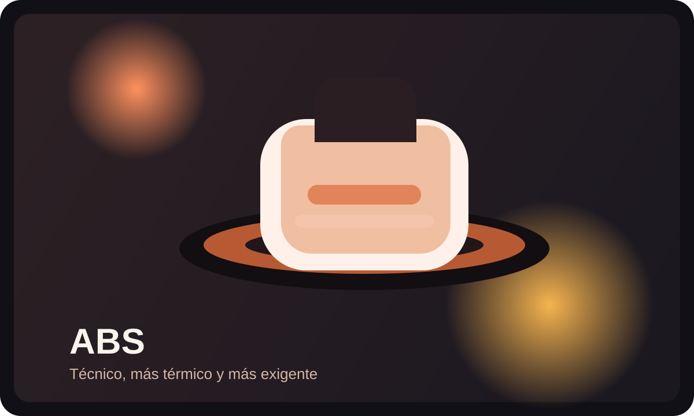
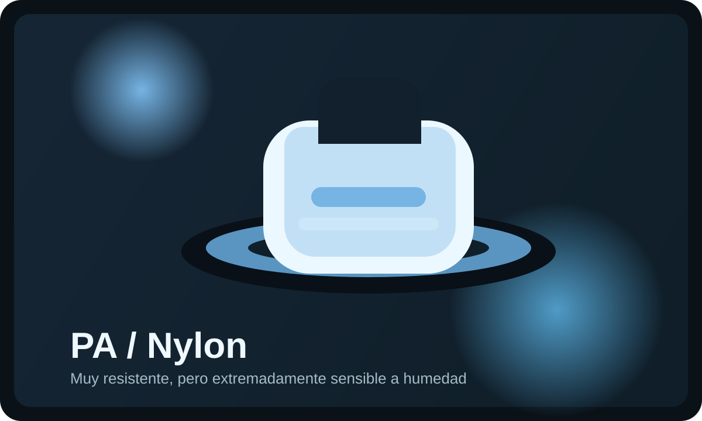
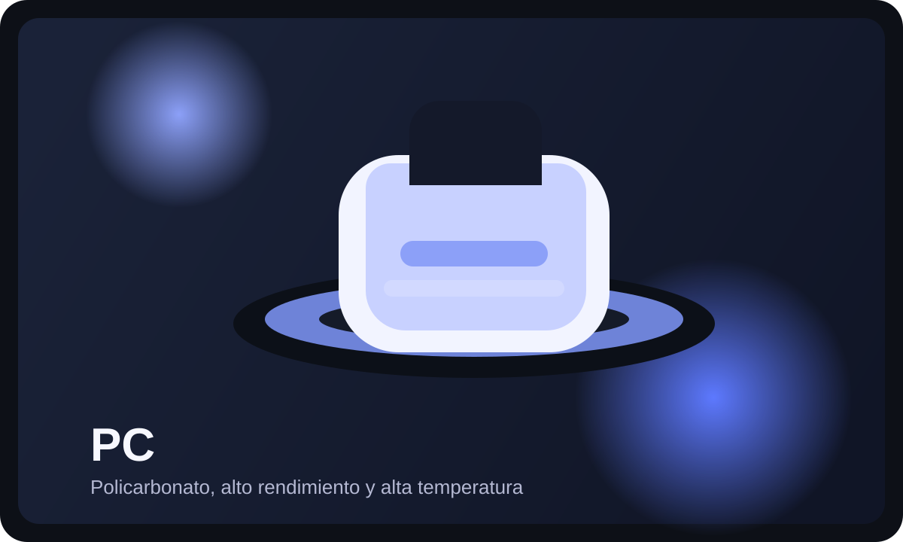
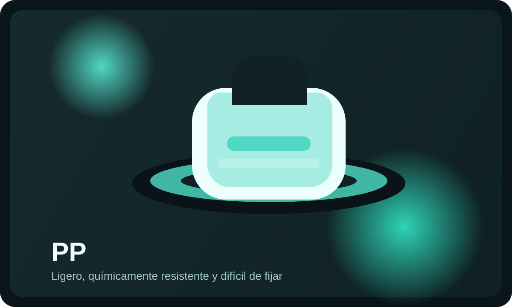

Primeros pasos
Qué es la impresión 3D, cómo elegir impresora y cómo preparar tu primera impresión.
- Tipos de tecnología
- Primer Benchy
- Errores iniciales
La guía definitiva de impresión 3D
Una plataforma visual para entender materiales, calibrar tu impresora, solucionar fallos, hacer mantenimiento y diseñar piezas mejores.

Todo lo que necesitas
Una estructura pensada para ir de lo básico a lo avanzado sin perder el contexto técnico.
Qué es la impresión 3D, cómo elegir impresora y cómo preparar tu primera impresión.
Hotend, extrusor, cama, boquillas, correas, sensores, firmware y movimiento.
SLA, MSLA, DLP, lavado, curado, soportes, seguridad y mantenimiento del VAT.
Compara PLA, PETG, ABS, ASA, TPU, nylon, PC, PVA, HIPS, carbono y resinas.
Cura, PrusaSlicer, OrcaSlicer, Bambu Studio, soportes, infill y retracción.
Z-offset, E-steps, flujo, temperatura, retracción, pressure advance e input shaping.
Warping, stringing, layer shifting, ghosting, mala primera capa, atascos y más.
Limpia, lubrica, revisa correas, cambia boquillas, cuida la cama y evita fallos.
Piezas resistentes, tolerancias, snap fits, roscas, soportes y orientación.
Evita riesgos eléctricos, incendios, humos, resina tóxica y malas prácticas.
Lija, pinta, pega, inserta roscas, retira soportes y mejora el acabado.
Qué impresora, filamento, herramientas y repuestos comprar según tu objetivo.
Rutas de aprendizaje
Qué es la impresión 3D, elegir impresora, instalar slicer, imprimir un Benchy y mejorar primera capa.
Nivelación, Z-offset, E-steps, flujo, temperatura, retracción, pressure advance e input shaping.
Identificar síntomas, revisar primera capa, material, extrusión, mecánica y aplicar solución.
Elegir material, diseñar para resistencia, orientar capas, ajustar perímetros e insertar roscas.
Seguridad, orientación, soportes, lavado, curado, exposición y mantenimiento del tanque.
Materiales de impresión 3D
Filtra por familia y compara dificultad, temperaturas, resistencia, flexibilidad y uso ideal.

Fácil, barato e ideal para empezar, prototipos, maquetas y piezas decorativas.
Más tenaz que PLA estándar, buena opción para piezas funcionales moderadas.
Acabado brillante para decoración; puede ser más frágil y marcar más las capas.

Resistente y algo flexible; excelente opción funcional para piezas de uso diario.

Resistente a temperatura; requiere ventilación, cámara y control del warping.

Ideal para exterior por resistencia UV; parecido al ABS, pero más estable al sol.

Flexible, resistente a impactos y abrasión; imprime mejor lento y con direct drive.

Muy resistente y tenaz, pero absorbe humedad y exige secado constante.

Alta resistencia térmica y mecánica; pide máquina cerrada y hotend potente.

Muy rígida y estable; es abrasiva y requiere boquilla endurecida.

Materiales de soporte: PVA soluble en agua, HIPS útil con ABS y limoneno.

Detalle alto: estándar, tough, flexible y lavable al agua. Requiere lavado, curado y seguridad.
| Material | Dificultad | Boquilla | Cama | Cámara | Resistencia | Flexibilidad | Uso ideal |
|---|---|---|---|---|---|---|---|
| PLA | Baja | 190-215 °C | 50-65 °C | No | Media | Baja | Aprender, prototipos, decoración |
| PETG | Media | 230-250 °C | 70-85 °C | No | Alta | Media | Piezas funcionales generales |
| ABS | Alta | 240-260 °C | 90-110 °C | Sí | Alta | Media | Piezas técnicas y térmicas |
| ASA | Alta | 245-265 °C | 90-110 °C | Sí | Alta | Media | Exterior y UV |
| TPU | Media | 215-235 °C | 40-60 °C | No | Alta impacto | Muy alta | Fundas, juntas, amortiguadores |
| Nylon | Alta | 250-285 °C | 80-100 °C | Recomendable | Muy alta | Media | Engranajes, bisagras, mecánica |
| PC | Muy alta | 270-310 °C | 100-120 °C | Sí | Muy alta | Media | Alta temperatura |
| Carbono | Alta | Según base | Según base | Depende | Alta rigidez | Baja | Piezas rígidas y estables |
| Resina | Media | No aplica | No aplica | Ventilación | Según tipo | Según tipo | Miniaturas, detalle, dental, joyería |
Diagnóstico de problemas
Selecciona un síntoma para ver causas probables y una solución rápida.
El diagnóstico aparecerá aquí con causa probable, revisión rápida y solución avanzada.
| Problema | Síntomas | Causas probables | Solución rápida | Solución avanzada |
|---|---|---|---|---|
| Warping | Esquinas levantadas | Cama fría, corrientes, material técnico | Brim y cama limpia | Cámara, adhesivo y perfil térmico |
| Stringing | Hilos entre piezas | Temperatura alta, humedad, retracción | Bajar temperatura | Secar filamento y test de retracción |
| Under-extrusion | Líneas finas y huecos | Atasco, flujo bajo, engranaje sucio | Limpiar boquilla | E-steps, flujo y cold pull |
| Over-extrusion | Exceso de material | Flujo alto, diámetro mal definido | Bajar flujo | Calibrar extrusión y medir filamento |
| Mala primera capa | No pega o aplasta | Z-offset incorrecto, cama sucia | Ajustar Z-offset | Malla, limpieza y test de nivelación |
| Boquilla atascada | No sale filamento | Residuo, polvo, temperatura baja | Aguja o cold pull | Cambiar boquilla y revisar PTFE |
| Heat creep | Atascos tras minutos | Ventilador hotend débil | Revisar ventilador | Mejorar disipación y retracción |
| Layer shifting | Capas desplazadas | Correas flojas, golpes, aceleración alta | Bajar velocidad | Tensar correas y revisar poleas |
| Ghosting / Ringing | Ondas en esquinas | Vibración, aceleración, estructura | Bajar aceleración | Input shaping y rigidez |
| Z banding | Bandas repetidas | Husillo, ruedas, acople | Limpiar eje Z | Alinear husillos y revisar ruedas |
| Elephant foot | Base ensanchada | Cama muy caliente, Z bajo | Bajar cama | Compensación en slicer |
| Blobs | Gotas en superficie | Costura, humedad, retracción | Secar filamento | Ajustar costura y pressure advance |
| Filamento húmedo | Burbujas, vapor, hilos | Absorción de agua | Secar bobina | Almacenamiento hermético |
| Clics en extrusor | Saltos del engranaje | Atasco, temperatura baja, velocidad alta | Subir temperatura | Revisar hotend y tensión |
| Soportes difíciles | Se fusionan a la pieza | Distancia Z baja, interfaz densa | Aumentar distancia | Usar árbol o soportes solubles |
| Piezas frágiles | Rompen entre capas | Temperatura baja, ventilador alto | Subir temperatura | Orientar capas y aumentar paredes |
| Agujeros pequeños | No encajan tornillos | Contracción y tolerancias | Aumentar diámetro | Calibrar flujo y horizontal expansion |
| Mala adhesión | La pieza se despega | Suciedad, Z alto, cama fría | Lavar cama | Superficie adecuada y brim |
| Puentes caídos | Filamento colgante | Poca ventilación, velocidad alta | Más ventilador | Test de bridging y soporte |
Mantenimiento completo
Área de trabajo, polvo, electrónica, ventiladores, restos de filamento y bobinas secas.
IPA, PEI, vidrio, G10, texturizada, adhesivos, nivelación y Z-offset.
Boquilla, cold pull, PTFE, engranaje, tensión, E-steps, flujo y atascos.
Correas, poleas, rodamientos, guías, varillas, husillos, ruedas V-slot y excéntricas.
Tornillos, marco, escuadras, cableado, conectores y mesa estable.
Marlin, Klipper, termistores, cartucho calefactor, fuente y ventiladores.
| Tarea | Frecuencia | Herramientas | Señales de alerta |
|---|---|---|---|
| Limpiar cama | Cada impresión crítica | IPA, jabón, paño | La primera capa no adhiere |
| Revisar correas | Semanal | Llaves Allen | Capas desplazadas o ringing |
| Limpiar extrusor | Semanal | Cepillo, aire, pinzas | Clics o subextrusión |
| Cambiar boquilla | Según desgaste | Llave, boquilla, calor | Líneas irregulares o diámetro abierto |
| Lubricar guías | Mensual si aplica | Grasa adecuada | Ruido, vibración o rozamiento |
| Revisar conectores | Mensual | Inspección visual | Olor, calor, cortes o falsos contactos |
Calibración paso a paso
Sirve para eliminar holguras. Si está mal aparecen vibraciones, capas movidas y medidas inestables.
Garantiza adhesión. Si está mal la pieza se despega aunque el perfil sea correcto.
Busca una distancia homogénea. El resultado esperado es una primera capa uniforme.
Define la presión inicial. Mal ajustado provoca líneas aplastadas o sueltas.
Hace que el extrusor empuje lo que debe. Evita subextrusión sistemática.
Ajusta la cantidad real de plástico. Mejora paredes, tolerancias y acabado.
Encuentra adhesión entre capas, brillo y stringing equilibrados.
Reduce hilos sin provocar atascos ni marcas excesivas.
Controla puentes con ventilación, temperatura y velocidad.
Valida dimensiones, esquinas, flujo y vibración de forma rápida.
Compensa presión en el hotend para esquinas limpias.
Reduce ringing midiendo o estimando resonancias de la máquina.
Slicers y parámetros
0.16-0.2 mm de capa, 200-215 °C, cama 55-65 °C, ventilador 100% y 50-120 mm/s según máquina.
230-250 °C, cama 70-85 °C, ventilador moderado, retracción ajustada y menos velocidad que PLA.
215-235 °C, cama 40-60 °C, velocidad baja, retracción baja y direct drive recomendado.
Impresión con resina
SLA, MSLA y DLP curan resina fotosensible capa a capa. Ganan detalle y superficie, pero exigen lavado, curado y gestión química.
Gran detalle, superficies finas, miniaturas, joyería, dental, piezas pequeñas y geometrías complejas.
Resina líquida, olor, guantes, limpieza, curado, soportes, FEP, VAT y residuos especiales.
Orientación, soportes, hollowing, drain holes, exposición, lavado, curado y mantenimiento del tanque.
La resina líquida no debe tocar la piel. Usa guantes de nitrilo, gafas y ventilación. Cura los residuos antes de desecharlos.
Diseño para impresión 3D
Seguridad en el taller
No dejes impresiones críticas sin supervisión, revisa cables y conectores, aleja inflamables, usa detector de humo, ventila ABS/ASA/resina, usa guantes con resina, no toques hotend ni cama caliente, mantén herramientas fuera del alcance de niños, gestiona residuos y trabaja con orden.
Herramientas y accesorios
Calculadoras
Glosario rápido
Printpedia 3D
Aprende los fundamentos, calibra tu impresora, elige el material correcto y resuelve problemas con una guía visual pensada para makers.